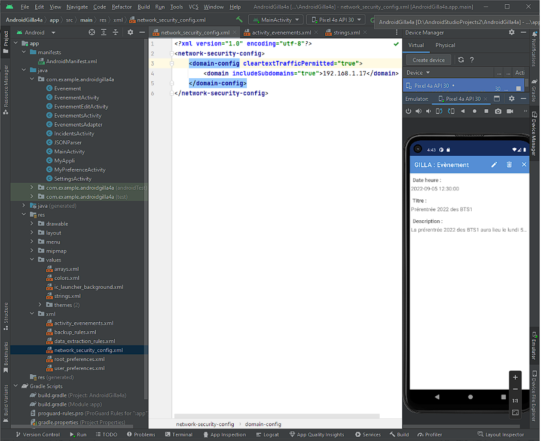
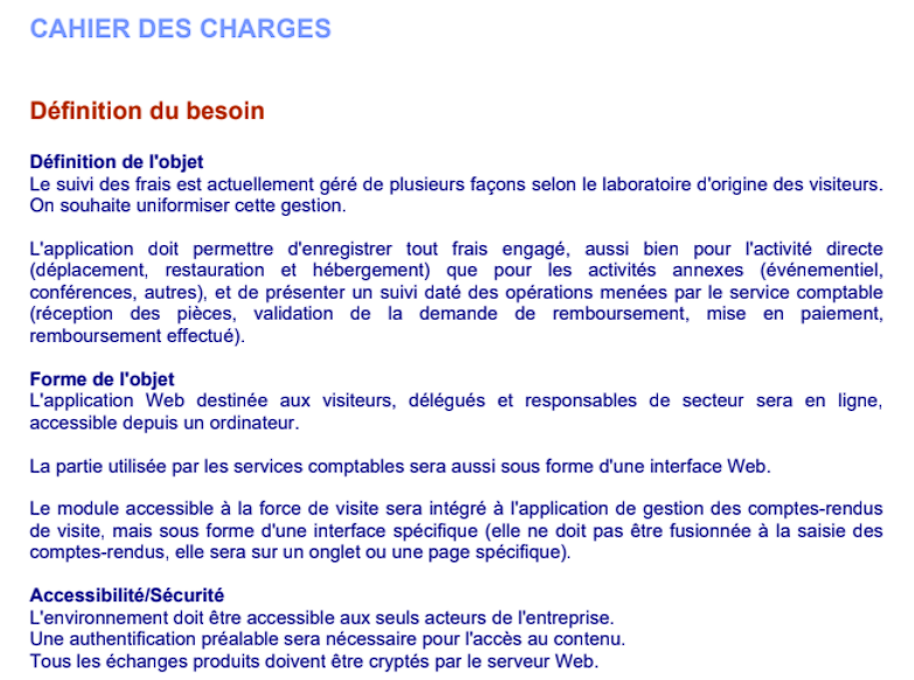

R√©alisations en cours de Formation ü뮂Äçüíª
Projet Gilla
Compétences mobilisés

Gérer le
patrimoine
informatique
Gérer des sauvegardes :
Recenser et identifier les ressources numériques :
(ressources logicielles utilisées)
Mettre à
disposition des
utilisateurs un
service
informatique
Réaliser les tests d’intégration et d’acceptation d’un service :
Travailler en
mode projet
,
Analyser les objectifs et les modalités d’organisation d’un projet
:
Planifier les activités :
(Calendrier général du projet GILLA et de ses trois sous-projets (BE : Backend, FE : Frontend, AM : Application Mobile)
Développer la
présence en
ligne de
l’organisation
Participer à l’évolution d’un site Web exploitant les données de l'entreprise) :
(capture d'écran du site gilla)
Répondre aux
incidents et aux
demandes
d’assistance et
d’évolution
Traiter des demandes concernant les applications :
(Capture du résultat d'une création de vues « Evènements »)

Description
I. Introduction au Projet GILLA
Le projet GILLA a pour but de développer un site web au service de la communauté du lycée Louis Armand. Ce système permettra de signaler et gérer les incidents techniques et logistiques via une plateforme centralisée.
Projet Swisspharma
Compétences mobilisés
Gérer le patrimoine informatique
Mettre en place et vérifier les niveaux d’habilitation associés à un service :
(capture d'écrans d'extraits de codes mettants en places une gestion des habilitations.)
Exploitation des référentiels normes et standards adoptés par le prestataire informatique :
(capture d'écrans d'arborescence et extraits de norme de développements)
Gérer des sauvegardes:
Mettre à
disposition des
utilisateurs un
service
informatique
Réaliser les tests d’intégration et d’acceptation d’un service:
(extrait document test)
Nous avons soumis l'application à plusieurs cycles de tests pour valider sa performance et sa sécurité. Ces phases critiques ont permis d'identifier et de corriger les anomalies, assurant la stabilité de l'application. Les retours constructifs de nos responsables pédagogiques ont joué un rôle déterminant dans le processus d'ajustement, nous permettant d'affiner notre application pour qu'elle réponde précisément aux attentes du cahier des charges.
Accompagner les utilisateurs dans la mise en place d’un service:
(extrait manuel d'utilisation)
Travailler en
mode projet
Analyser les objectifs et les modalités d’organisation d’un projet:
(extrait cahier des charges qui définis les objectifs)

(exemple plan de sprint)
Planifier les activités:
(planification gantt)

Évaluer les indicateurs de suivi d’un projet et analyser les écarts:
(document de sprint indiquant la date de passage devant le professeur)
Développer la
présence en
ligne de
l’organisation
Participer à l’évolution d’un site Web exploitant les données de l'entreprise:
(capture page d'acceuil du site)
Répondre aux
incidents et aux
demandes
d’assistance et
d’évolution
Collecter, suivre et orienter des demandes :
(évolution de la structure de la base de données en ajoutant de nouveau frais forfaits)
Traiter des demandes concernant les applications:
(extrait de code adaptant l'évolution de la base de donnée)
Description
I. Application de gestion de fiches de frais
Pour ce projet de seconde année, nous avons eu l'opportunité de travailler pour l'entreprise fictive Swisspharma. Notre mission était de développer une application Web visant à uniformiser la gestion des frais engagés par les employés lors de leurs déplacements professionnels.
Le cahier des charges, ci-joint, détaille les spécificités du système à mettre en place : enregistrement et suivi des frais, processus de remboursement, interface comptable dédiée, et sécurisation des données échangées. L'application est conçue pour être intuitive et accessible, assurant une expérience utilisateur fluide pour tous les acteurs de l'entreprise.
Entretien d'un réseau de partage de ressources entre développeurs sur les réseaux sociaux.
Compétences mobilisés
Organiser son
développement
professionnel
(Mettre en place son environnement d’apprentissage personnel)
Description
Entretien d'un réseau de partage de ressources pour développeurs
Au cœur d'une communauté dynamique en ligne, cette tâche impliquait de maintenir et de développer un réseau de partage de ressources pour les développeurs. En utilisant les plateformes sociales comme vecteur de diffusion, j'ai pu rassembler une collection diversifiée de guides, tutoriels et outils de programmation, accessibles via des liens Google Drive partagés.
L'initiative a été portée par des professionnels de l'industrie, des passionnés d'IA et des créateurs de contenu technique, tous engagés dans le partage de leurs connaissances et compétences. Ces échanges enrichissants ont favorisé l'entraide et la croissance personnelle au sein de la communauté, tout en offrant aux membres l'accès à des ressources gratuites et de qualité pour avancer dans leurs projets de développement.